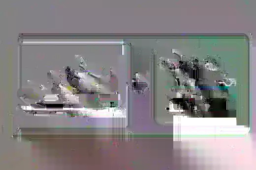
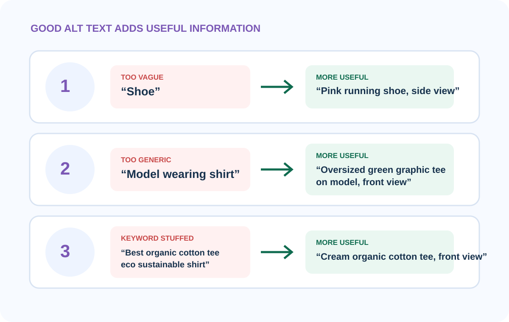
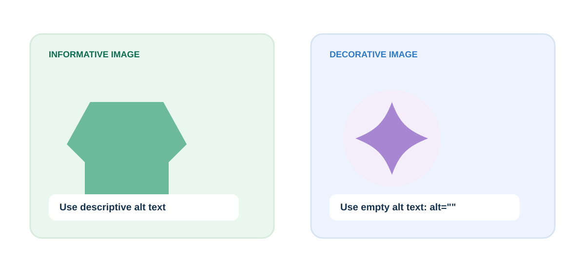

Alt text is a short text alternative that communicates the useful information in an image when someone cannot see it.
On a product page, that matters because the image may contain information a shopper needs to make a decision: color, shape, fit, pattern, view, or another visible attribute.
1. What is alt text?
Alt text is text attached to an image in the page markup. Assistive technologies such as screen readers can announce it when the image carries information.
Think of it as the image’s useful meaning in words. If the product photo shows a pink running shoe from the side, the alt text should communicate the information that matters about that view.

2. Why does product-image alt text matter?
The priorities are not equal. Accessibility and accurate description come first. SEO is not a reason to stuff extra keywords into alt text.
3. How do I write useful product alt text?
Start with the product. Then add the visible attributes that make this image different from the other images on the listing.
[Product] + [Color/variant] + [View] + [relevant visible detail]
You do not need to force every part into every image. Use only what helps explain that specific photo.
Penstack keeps generated alt text under 125 characters as a writing target for concise product-image descriptions. That is not a universal accessibility limit. If an image genuinely needs more context, clarity matters more than hitting a magic number.
4. What does good product alt text look like?

5. What should I avoid?
Do not start every description with “image of” or “picture of.” A screen reader already knows it is an image.
Do not copy the product title into every image. The front view, back view, detail shot, and lifestyle image communicate different things.
Do not use alt text as a hidden keyword field. Repetition that adds no visual meaning makes the text less useful.
Do not invent details. If you cannot verify the material, fit, or color from the image and product data, do not add it.
6. Does every image need descriptive alt text?
No. Purely decorative images that add no information can use empty alt text so assistive technology can skip them.
Product-gallery images are usually informative, though. If a photo helps someone understand the item, variant, fit, texture, or view, it generally deserves a meaningful text alternative.

Where penstack fits in
In Penstack, you confirm the product image context such as the variant, view, and shot type. Penstack then generates alt text separately from the image title so the two fields can do different jobs.
The generated text is still a draft. Review it against the actual image before publishing. Accessibility depends on accuracy, not automation.
Next: learn the difference between filenames, alt text, and visible product copy →
The takeaway
Alt text should communicate the useful visual information a shopper would miss if they could not see the image.
Put image details into the same product workflow.
penstack keeps image titles, alt text, product content, review, and publishing connected.